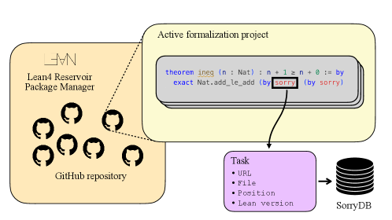
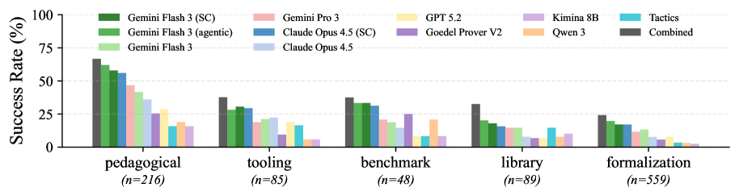

SorryDB: Can AI Provers Complete Real-World Lean Theorems?
Austin Letson, Leopoldo Sarra, Auguste Poiroux, Oliver Dressler, Paul Lezeau, Dhyan Aranha, Frederick Pu, Aaron Hill, Miguel Corredera Hidalgo, Julian Berman, George Tsoukalas, Lenny Taelman
Introduces a dynamically-updating benchmark of open `sorry` tasks scraped from 78 active real-world Lean GitHub projects and evaluates provers on filling them.
Abstract
We present SorryDB, a dynamically-updating benchmark of open Lean tasks drawn from 78 real world formalization projects on GitHub. Unlike existing static benchmarks, often composed of competition problems, hillclimbing the SorryDB benchmark will yield tools that are aligned to the community needs, more usable by mathematicians, and more capable of understanding complex dependencies. Moreover, by providing a continuously updated stream of tasks, SorryDB mitigates test-set contamination and offers a robust metric for an agent's ability to contribute to novel formal mathematics projects. We evaluate a collection of approaches, including generalist large language models, agentic approaches, and specialized symbolic provers, over a selected snapshot of 1000 tasks from SorryDB. We show that current approaches are complementary: even though an agentic approach based on Gemini Flash is the most performant, it is not strictly better than other off-the-shelf large-language models, specialized provers, or even a curated list of Lean tactics.
Problem
Existing formal theorem proving benchmarks are static, often composed of competition problems, and do not reflect the actual needs of the Lean formalization community. Static benchmarks are also vulnerable to test-set contamination.
Approach
SorryDB is a dynamically-updating benchmark of open Lean tasks drawn from 78 real-world formalization projects on GitHub. It extracts all theorems containing a sorry keyword, stores metadata for each, and provides a framework for solution extraction and verification. The benchmark updates continuously as new sorries appear and old ones are resolved, mitigating contamination.

Figure 1: Dataset extraction pipeline for SorryDB. We consider 78 repositories on active GitHub Lean projects and list all the theorems that contain a sorry. We save the metadata for each of them and store it in the database. A project is considered active when it had at least one commit in the previous three months.
Results
Evaluation of multiple provers shows the best combined approach solves 35.7% of tasks. Among individual models, agentic Gemini Flash 3 achieves 30.3% with iterative self-correction. Specialized LLMs like Kimina Prover 8B (1.0% pass@1) significantly underperform general-purpose LLMs like Gemini Pro 3 (11.0% pass@1), suggesting real-world formalization tasks differ substantially from competition benchmarks.

Figure 2: Success rate of different provers split by repository category. We compare general purpose LLMs, specialized models (pass@32), self-correcting (SC) and agentic approaches ( 16 iterations). We see that tasks from pedagogical repositories are easier to prove, while those from math formalization projects are harder. A specialized prover such as Goedel Prover works relatively better on bench